Checklist: the whole installation on one page
The procedure in a nutshell. Print it and tick the boxes as you install. You will find the details of each part in the chapter named next to the heading.
Preparation chapter 2
- HTTPS is turned on for your domain.
- The folder or subdomain runs PHP 8.3 (8.1 at the very least).
- An empty database and a user with “ALL PRIVILEGES” have been created.
- I have noted down the host, database name, user and password.
Installation chapters 3 and 4
- I uploaded the
allstatfolder over FTP, and “Failed transfers” is empty. - I opened the folder’s address and the wizard appeared.
- I copied the code from the
install-token.phpfile into the “Code from the file install-token.php” field. - The server check is green and the database test passed.
- I filled in the organization, website and administrator and clicked “Install AllStat”.
- I saved the administrator password in a password manager.
After installation chapters 5 to 7
- I have backed up
config.phpandconfig-keys.phpoutside the website. - The daily cron job is set up and Settings shows “Running”.
- Two-factor authentication is turned on.
- The legal pages contain the correct details.
- The first service is connected and its history is downloaded.
- AI connection (optional): the check in the “AI connectors” menu shows no errors and the connector has been added in Claude or ChatGPT.
- I know where the updates are: an administrator sees the “New version” card in the sidebar and installs it with a button (chapter 8).
1Before you start
What AllStat can do
After installation, AllStat shows you the trends in your website traffic and social networks in one overview. It downloads the data from the services below. You connect each of them separately and at any time later. AllStat also works without any connection, it just shows an empty overview.
| Service | What AllStat reads from it | What you prepare in advance | Difficulty |
|---|---|---|---|
| Google Analytics 4 | traffic, sources, conversions | a Google Cloud project, access to the GA4 account | medium, about 20 minutes |
| Google Search Console | search queries and pages | the same Google project | medium |
| YouTube | views, watch time, subscribers | the same Google project | medium |
| Microsoft Clarity | visitor behavior on the website | an access key (API token) from Clarity | easy, about 5 minutes |
| Facebook, Instagram, Meta Ads | reach, posts, ads | your own app on Meta for Developers | harder, about 30 minutes |
| company page statistics | an app on LinkedIn Developers and its approval | hardest, approval takes days | |
| Google Ads | ad performance | a Google Cloud project with approved access to the Google Ads API | harder, approval within 10 business days |
| Microsoft Ads | account and campaign performance | an OAuth client (Google or Microsoft Entra) and a Developer Token | harder, about 30 minutes |
| Seznam Webmaster | indexing status | an API key from reporter.seznam.cz | easy |
What you need
| Requirement | Details |
|---|---|
| Web hosting with PHP 8.1 or newer | We recommend PHP 8.3. The required PHP extensions (pdo_mysql, curl, openssl, mbstring, json, ctype) are enabled on ordinary hosting, and the wizard checks them. |
| A MySQL or MariaDB database | MySQL 5.7.8 or newer, or MariaDB 10.3 or newer. An empty database and a user with full privileges on it. |
| HTTPS | Most hosting providers offer a free certificate. Google, Meta and LinkedIn will not allow sign-in without it. |
| FTP access | FTP is a way to transfer files to the server, usually with a program such as FileZilla. You get the login details from your hosting provider. The file manager in your hosting control panel works too. |
| Task scheduler (cron) | Cron is a server service that runs a command at a set time. AllStat needs it once a day to download new data. Most hosting providers offer it in the control panel. |
| Outgoing connections from the server | The server must be allowed to call Google, Meta and LinkedIn services. Some cheap hosting plans block this, and the wizard checks it. |
You do not need SSH access, Composer, Node.js or your own server. As a rough guide: two websites and eleven connections take up about 9 MB in the database.
The installation wizard has been tested on PHP 8.3 and MySQL 8.4 (a clean installation into a folder and into the root of an address, an update, a non-writable folder). AllStat itself runs in production on MariaDB 11.4. For an installation in a folder, we verified the AI connection with AllStat’s built-in check on Apache. For an installation in the root of an address, we verified it by calling all the addresses directly. We have not tested a real connection from Claude or ChatGPT to a live server in this package, because it needs a public address with HTTPS. We have not tested Windows hosting (IIS).
2Preparing your hosting
Do three things in your hosting control panel. The examples use the cPanel panel. Other panels (DirectAdmin, Plesk, the control panels of Czech hosting providers) have the same options under slightly different names.
Turn on HTTPS
In the certificates section (cPanel: “SSL/TLS Status”, elsewhere “Let's Encrypt”), turn on a free certificate for the domain where AllStat will run. Check that your website opens at an address starting with
https://.Set the PHP version
In “MultiPHP Manager” or “Select PHP Version” (elsewhere “PHP settings”), choose PHP 8.3 for the domain, 8.1 at the very least. If the panel offers a list of extensions, check that
pdo_mysql,curl,opensslandmbstringare ticked.Create an empty database and a user
In cPanel, open “MySQL® Databases” and go through four steps:
- In “Create New Database”, enter a name, for example
allstat, and confirm. Your hosting adds a prefix in front of it, so the final name will look likeaccount_allstat. - In “Add New User”, enter a user name and a strong password (use the password generator the panel offers).
- In “Add User To Database”, select the user and the database and confirm.
- On the next screen, tick “ALL PRIVILEGES” and save.
Note down four details, you will type them into the wizard: the host (usually
localhost), the database name and the user (both with the prefix) and the password.- In “Create New Database”, enter a name, for example
Create a new, empty database for AllStat. AllStat uses tables without a prefix (for example domains, metrics_daily), so do not share the database with another application that might have a table with the same name.
Where to put AllStat
You have two common options:
- A folder in your main domain. You upload the
allstatfolder into your website’s folder and AllStat runs athttps://www.your-company.com/allstat/. This is the simplest option, use it if you are not sure. - Your own subdomain. You create a subdomain, for example
statistics.your-company.com, and upload the contents of theallstatfolder into its folder (soindex.phpsits directly in the subdomain’s root). The wizard works out the address by itself.
Do not upload AllStat into the root of a website that already runs WordPress or another system. Both options also work with the AI connection (chapter 7). On a subdomain it is the easiest to turn on, because it needs no changes to files in the domain root.
3Uploading the files over FTP
Unpack the package on your computer
Unpack the
allstat-1.5.0.zippackage (in Windows: right-click, “Extract All…”). This creates anallstatfolder.Connect to your hosting
In FileZilla (or another FTP client), enter the host, user, password and port you got from your hosting provider. If your hosting offers an encrypted connection (FTPS or SFTP), choose it.
Open the website folder
On the server, go into the folder your website is served from. It is usually named
public_html,www,htdocsorweb.Upload the allstat folder
Drag the whole
allstatfolder from your computer to the server. It is about 100 files and roughly 3 MB, so the upload takes a few minutes. Wait until the transfer queue is empty.Check that nothing got lost
In FileZilla, open the “Failed transfers” tab, it must be empty. Leave the transfer type set to “Auto” or “Binary” (in the “Transfer” menu). Text mode would damage the images.
On the server you will then see this structure:
public_html/
└── allstat/
├── admin/ allstat-mcp/ api/ assets/ cron/
├── docs/ lib/ oauth/ views/
├── .htaccess index.php install.php schema.sql ...No FTP? You can upload the package as a single ZIP file through the file manager in your hosting control panel (cPanel: “File Manager”, the “Upload” button) and extract it there (the “Extract” button).
Finish the installation right after uploading the files. Without the installation code from the file on the server, nobody else can complete it, but the wizard stays open until you finish the installation. Once it is done, the wizard locks itself and deletes itself.
4Installing in the browser
Open the address where you uploaded the folder, for example https://www.your-company.com/allstat/, or the subdomain’s address if you uploaded AllStat into its folder. The installation wizard appears automatically. The wizard works out the address, the path and the placement by itself, and it works the same way in both options. The whole thing takes about five minutes.
Server check
The wizard first checks the PHP version, the extensions, write permissions, HTTPS, internet access and whether the uploaded files are complete. If everything is fine, it shows a single green sentence. If something is missing, it shows the specific item with an explanation of what to do (see the chapter When something goes wrong).

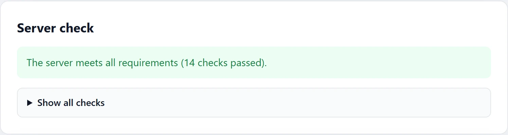
Installation code
So that nobody else who finds the wizard before you can finish a half-done installation, the wizard creates an install-token.php file in the AllStat folder when you first open it. Open it over FTP or in your hosting file manager (it is blank in a browser) and copy the code from the KOD: line into the “Code from the file install-token.php” field. Lowercase letters and hyphens are fine. Without the code, the wizard will neither test the database nor install anything.
<?php
// AllStat: instalační kód. ...
// KOD: K7QM-2XPA-9WFD-HT4CThe code in the example is made up, yours is in the file on the server. The comment line in the file is in Czech, only the line starting with KOD: matters. The file deletes itself when the installation is finished.
If your hosting does not let PHP write to the folder, the wizard says so and shows a template. Create the install-token.php file yourself: write <?php on the first line and // KOD: on the second, followed by your own code, at least 12 letters and digits without accents. Reload the page and enter the code. Delete the file after the installation.
Step 1: Database
Type in the database details you noted down in chapter 2 and click “Test connection”. The wizard tries to connect and checks the database version, privileges and storage. If everything is fine, it shows a green message.

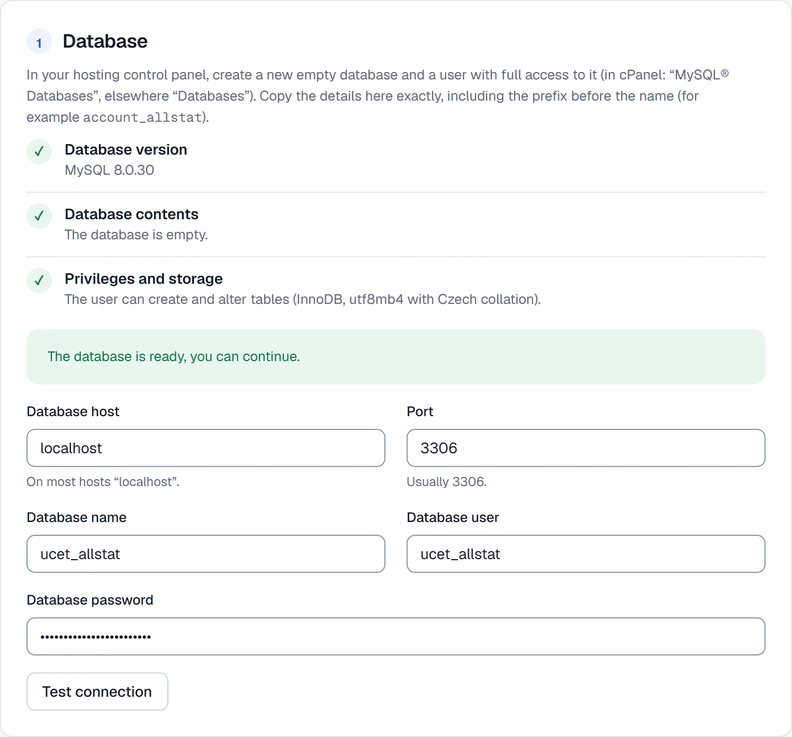
If the test fails, the wizard tells you what is wrong:
| Wizard message | What it means and what to do |
|---|---|
| wrong user name or password | The user or password does not match. Type them again, and watch the prefix on the user name and upper and lower case. |
| The user has no access to this database | The user is not assigned to the database. In your hosting control panel, add the user to it with “ALL PRIVILEGES”. |
| A database with this name does not exist | The database name is wrong (the prefix is missing) or you have not created the database yet. Create it as described in chapter 2. |
| Cannot connect to the database server | Try a different host: enter 127.0.0.1 instead of localhost, or the address your hosting shows for the database. |
| AllStat with users already exists in this database | The database already contains a finished installation. The wizard deliberately does not overwrite it. Use an empty database, or restore the original files (chapter Backup and moving). |

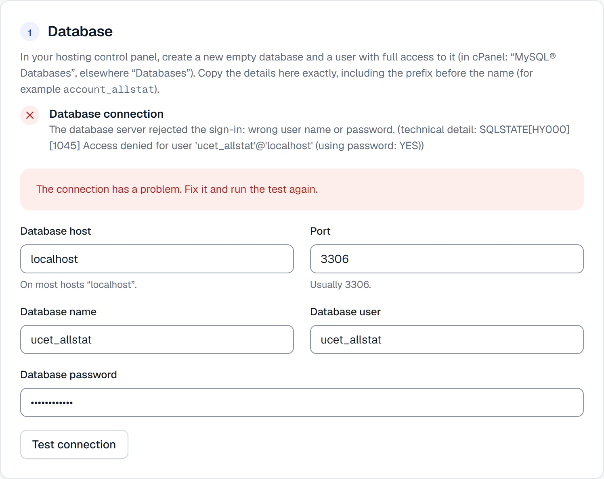
Step 2: Organization and website
Fill in who runs AllStat and which website you want to track.
- The Organization or company name and the Contact email appear on the public privacy pages. Google, Meta and LinkedIn require them when you connect. You can change them later in Settings.
- The Tracked website address is the first website whose statistics you want to track. You add more websites later.
- Under More details (optional) you can add the registered address, the company ID and a short description of the organization for AI analyses. It is saved as the context for AI of the first website; for other websites you add it under “AI connectors”. The description is useful when you send AllStat data to an AI assistant for analysis: write, for example, whether you are an online shop or an organization, and what the goal of your website is. An empty field means a general context.
- Under Advanced (time zone, application path) you will find the time zone (the default is Europe/Prague) and the application’s path on the server. The wizard works out the path by itself, so change it only in exceptional cases.

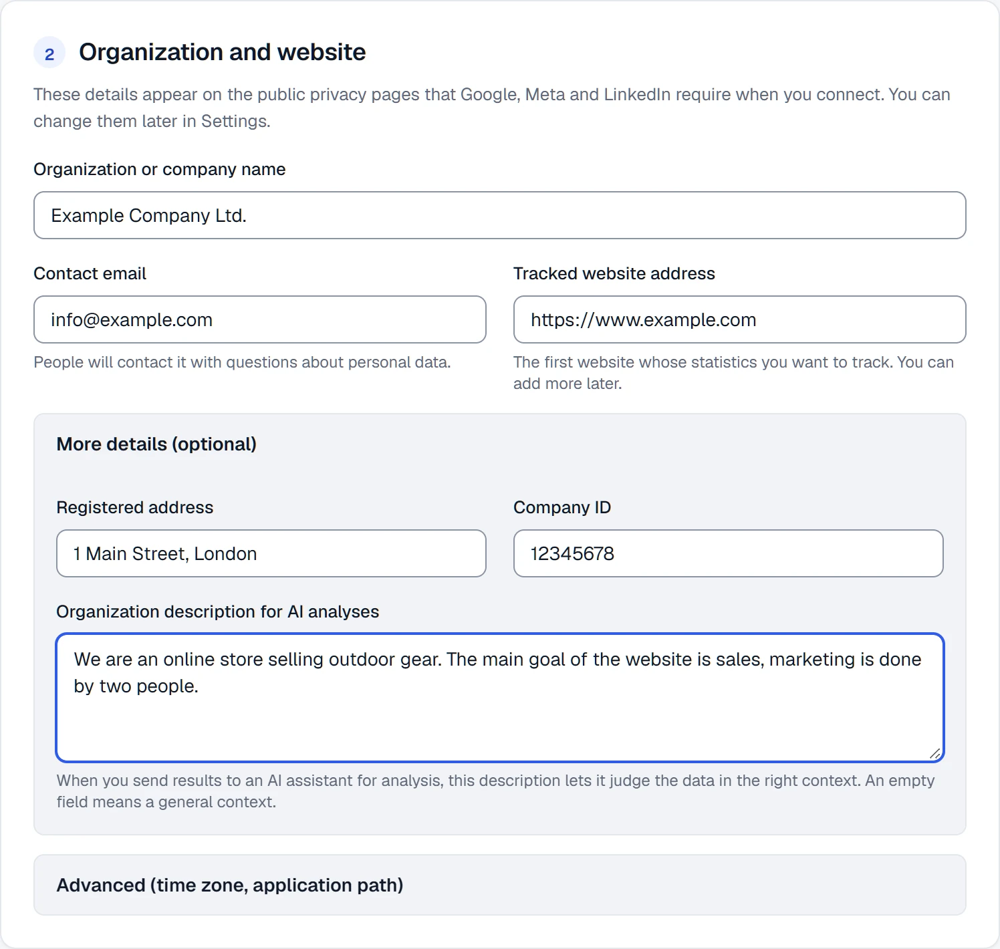
Step 3: Administrator
Create the first account with full rights. Enter a name, an email (used to sign in) and a password at least 12 characters long. The “Generate a strong password” button creates a random twenty-character password. Save it in a password manager right away, you will not see it anywhere after the installation.

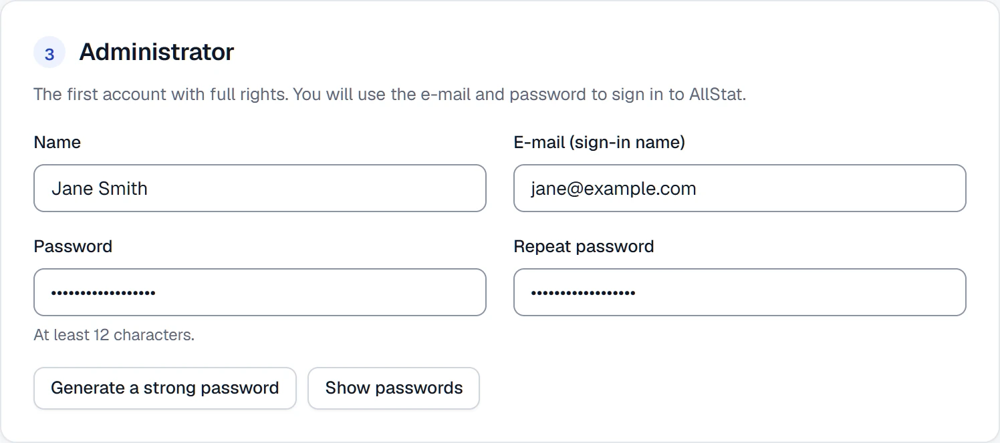
Step 4: AI connection
AllStat can give the Claude and ChatGPT assistants access to its data (details in chapter 7). In the wizard you only choose the address where the MCP server will run, that is, the “front door” for the assistants. You decide whether to turn it on after the installation. You have three options:
- At the AllStat address (the default). The simplest option. If AllStat runs at the root of an address (for example on a subdomain), there is nothing more to set up. If it runs in a folder of a domain, the wizard shows you a short rule for the
.htaccessfile in the domain root at the end. - On its own subdomain. You enter the subdomain’s address, for example
https://mcp.your-company.com. You create this subdomain in your hosting and point its folder to the folder where AllStat is. The rule in the domain root is then not needed. - Set up later. You fill in the addresses yourself in the “AI connectors” menu.

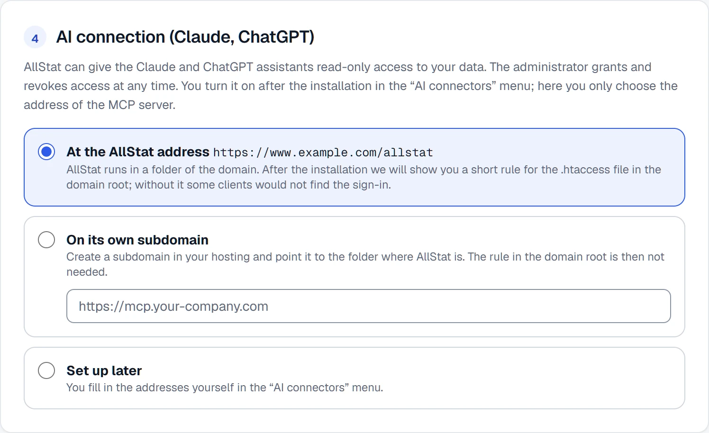
Running the installation
Click “Install AllStat”. Within a few seconds, the wizard does the following:
- creates 40 tables in the database,
- saves the organization details and adds the first tracked website,
- saves the addresses for the AI connection based on your choice (you turn it on later in the “AI connectors” menu),
- creates the
config.phpfile with the database access, - creates the
config-keys.phpfile with your own unique encryption key, - verifies that the application connects and encrypts with the files it created,
- creates the administrator and deletes itself.
At the end you see the “AllStat is installed” page with the four steps described in the next chapter and an “AI connection: next step” card. It shows the MCP server address and, depending on your choice, the rule for the domain root.

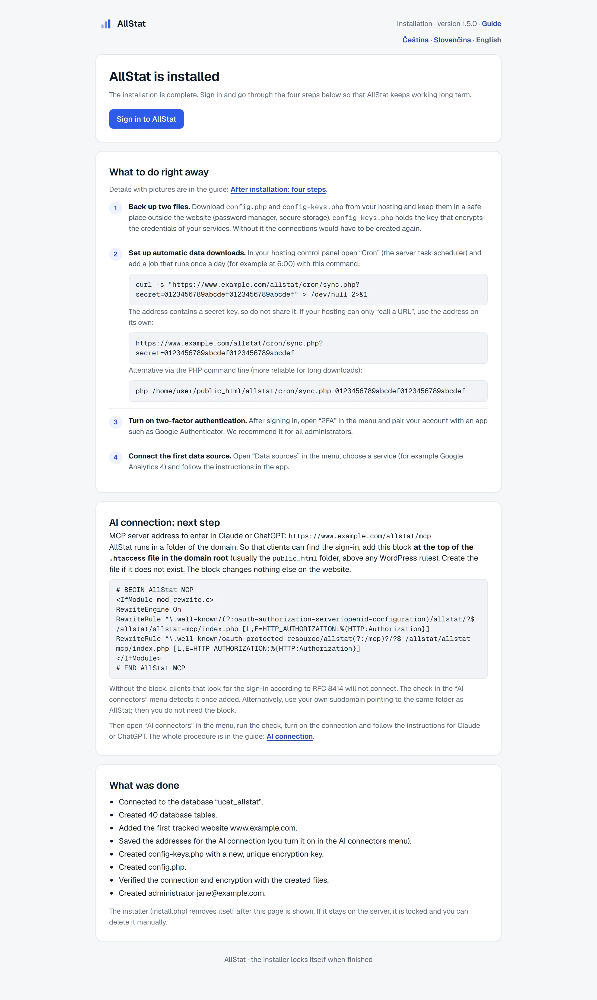
On some hosting plans, PHP is not allowed to write to the folder. The wizard detects this, still prepares the database, and shows you the contents of the config.php and config-keys.php files at the end. Save them to the folder containing install.php (over FTP or in a file manager). Do not close the page in the meantime, you will not see the key from it a second time. Afterwards, also delete the install-token.php file with the installation code from the folder.

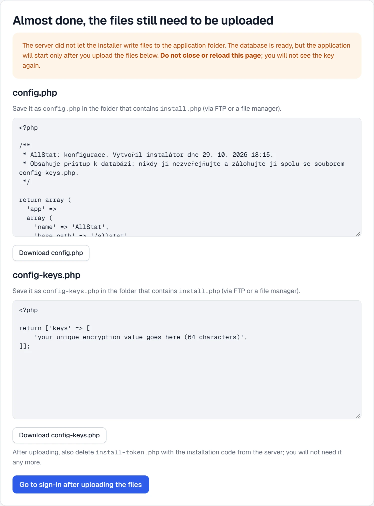
5After installation: four steps
Sign in with the email and password from step 3. After signing in, you will see an empty overview, because no services are connected yet. Before you start on them, finish four things that AllStat depends on to work reliably.

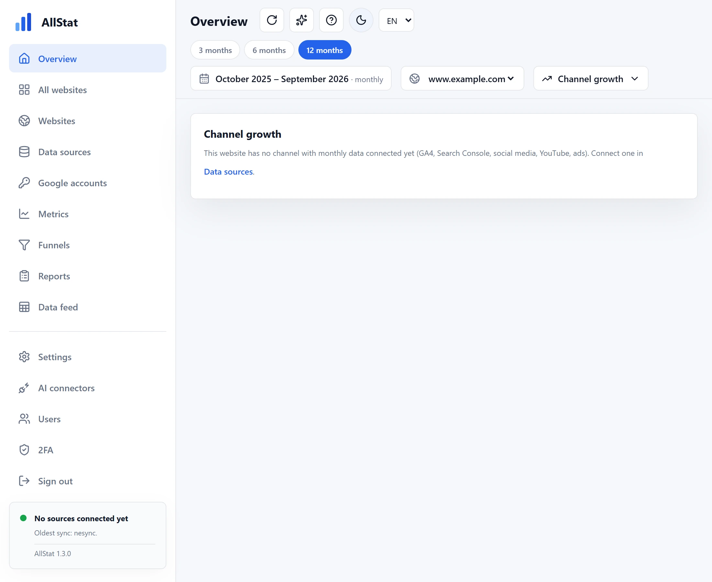
1. Back up config.php and config-keys.php
Download both files from your hosting and keep them in a safe place outside the website, ideally in a password manager or secure storage.
config.phpcontains the database access.config-keys.phpcontains the key AllStat uses to encrypt the stored sign-ins to your services. If the key is lost, the sign-ins cannot be decrypted and you would have to create all the connections again.
Do not send the files to anyone by email and never put them in public code repositories.
2. Set up automatic data downloads (cron)
Without this step, AllStat downloads data only manually. Once a day, cron downloads the new data for the last seven days for all connections. You download the 16-month history manually with the button on each source.

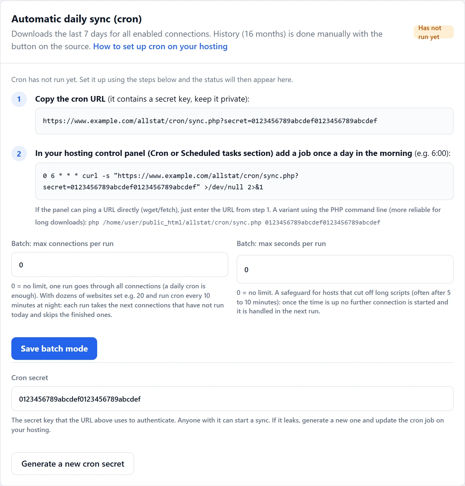
The procedure in cPanel:
In your hosting control panel, open “Cron Jobs”.
In “Add New Cron Job”, set it to run once a day, for example at 6:00 (the “Once Per Day” option, hour 6, minute 0).
Paste the command from Settings or from the wizard’s final page into the “Command” field. It looks like this:
curl -s "https://www.your-company.com/allstat/cron/sync.php?secret=YOUR_SECRET_KEY" > /dev/null 2>&1Confirm with the “Add New Cron Job” button.
If your hosting does not have the curl command, use one of these alternatives:
- wget:
wget -q -O /dev/null "https://…/cron/sync.php?secret=…" - PHP from the command line (more reliable for long downloads):
/usr/local/bin/php /home/username/public_html/allstat/cron/sync.php YOUR_SECRET_KEY. The path to the PHP program differs between hosting providers, so ask yours. - An external service: if your hosting does not offer cron, enter the address in a free service that calls it once a day (for example cron-job.org).
One cron run goes through all the connections one after another, and one connection takes roughly 5 to 15 seconds. With dozens of websites, this can take longer than your hosting allows a script to run. So in Settings, in the “Automatic daily sync (cron)” block, turn on batch mode: set the maximum number of connections (for example 20) or the maximum number of seconds per run, and run cron more often, for example every 10 minutes between midnight and 6 a.m. (*/10 0-5 * * *). Each run takes the next connections that have not run that day yet and skips the finished ones.
The next day, open Settings. Next to the “Automatic daily sync (cron)” heading, the status “Running” must be shown, along with the time of the last run. If AllStat does not see cron for 26 hours, it changes the status to “Has not run for over 26 h”. You can also try the address with the secret key in a browser, it answers with a short text starting with {"ok":true.
3. Turn on two-factor authentication (2FA)
Two-factor authentication means that in addition to your password, you enter a six-digit code from your phone. Click the circle with your initials in the top right corner, choose “Two-factor authentication”, scan the QR code with an app (Microsoft Authenticator, Google Authenticator, 1Password or Bitwarden) and confirm the code. In Settings, you can then turn on “Require 2FA for all users”. We recommend this as soon as AllStat has more than one user.
After you confirm the code, AllStat shows 10 backup codes once. Save them in a password manager or download them as .txt: if you lose your phone, sign in with the “No phone? Use a backup code” link. Each code works only once. The Two-factor authentication page shows how many are left and lets you generate new ones after entering your password and a code from the app. That is also where you turn off your own 2FA when you change phones: enter your password and a code from the app, or a backup code if you have no phone (this also disconnects AI connections).

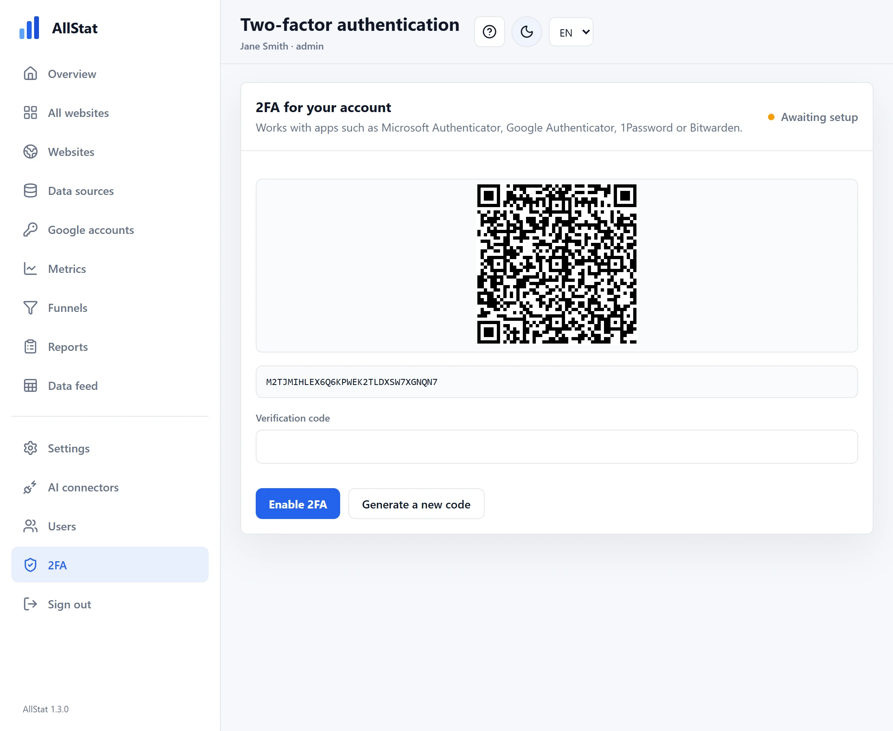
4. Check the legal pages
AllStat has three public pages that Meta and LinkedIn require when you create an app: privacy.php (privacy policy), terms.php (terms) and data-deletion.php (data deletion). They show the details you entered in the wizard. You change them in Settings, in the “Legal pages (Privacy / Terms / Data deletion)” block.

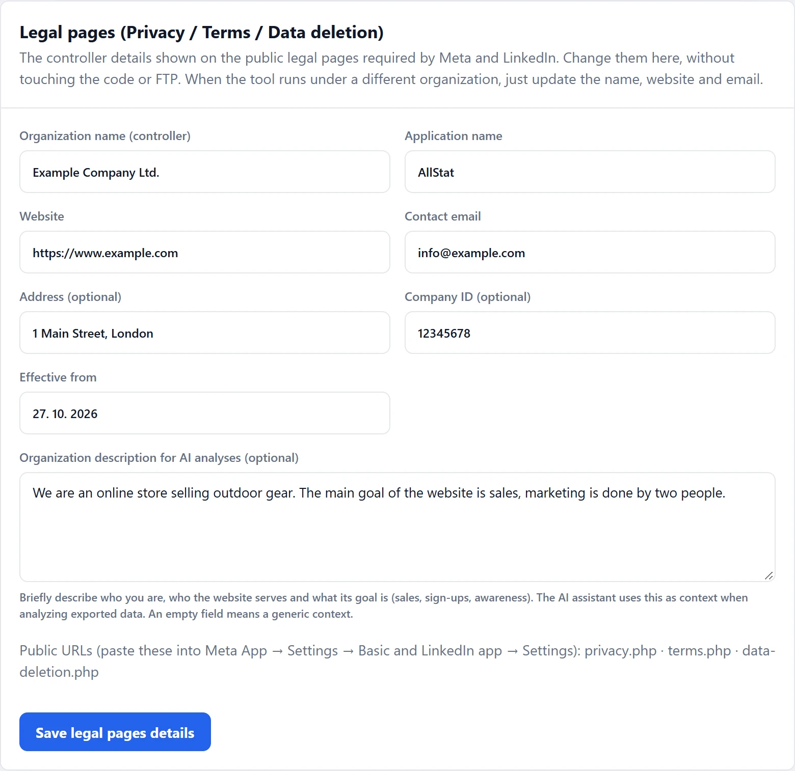
The texts of the pages describe what data AllStat processes (aggregated statistics and encrypted access keys). We recommend having them reviewed by the person responsible for personal data protection in your organization.
6Websites, users and connecting services
More websites
In the menu, open “Websites” and add a name and a domain. Each website has its own connections, overviews and history. You switch between websites in the top left corner of the sidebar (on a phone, the button with three lines in the top bar opens it). From eight websites on, the menu has a search box: type part of a name or domain and press Enter to open the first match.

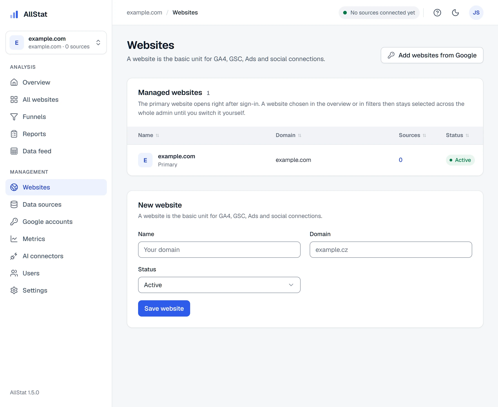
If you manage several websites in Google Analytics, you do not have to add them by hand: use Google accounts, where you pick the websites from a list.
All websites on one page
The “All websites” page shows, for each website, sessions, key events, revenue and clicks from Google for the selected period (7, 30 or 90 days, this month or last month), with the change against the previous period and a small chart of sessions. You can sort the websites (most sessions, biggest drop, by name), filter them by Google account and search by name. At the top there are totals for all the displayed websites. Click a website’s name to open its detailed overview. A regular user sees only the websites they have access to. The numbers come from the last synchronization, and the page does not download anything from Google.
Users
In the “Users” menu you create more accounts. The Admin role can do everything: manage websites, connections, settings and users. The User role can view overviews and reports and set up their own two-factor authentication. Each team member should have their own account, do not share passwords. A new account, a new password for another user, promotion to administrator and resetting another user’s 2FA are confirmed with your password and a code from the app (the “Confirmation” fields at the bottom of the form). You reset another user’s 2FA on their edit page.
For each account you set the Access to websites. The “All websites” option also covers websites added later. With “Selected websites only”, you tick which websites the user sees in the overview, in reports and in shared links. The other websites are not shown to them, not even in the selector, and they cannot reach them by editing the address. This is useful when you share AllStat with clients or partners and each of them should see only their own website. An administrator always sees all websites.

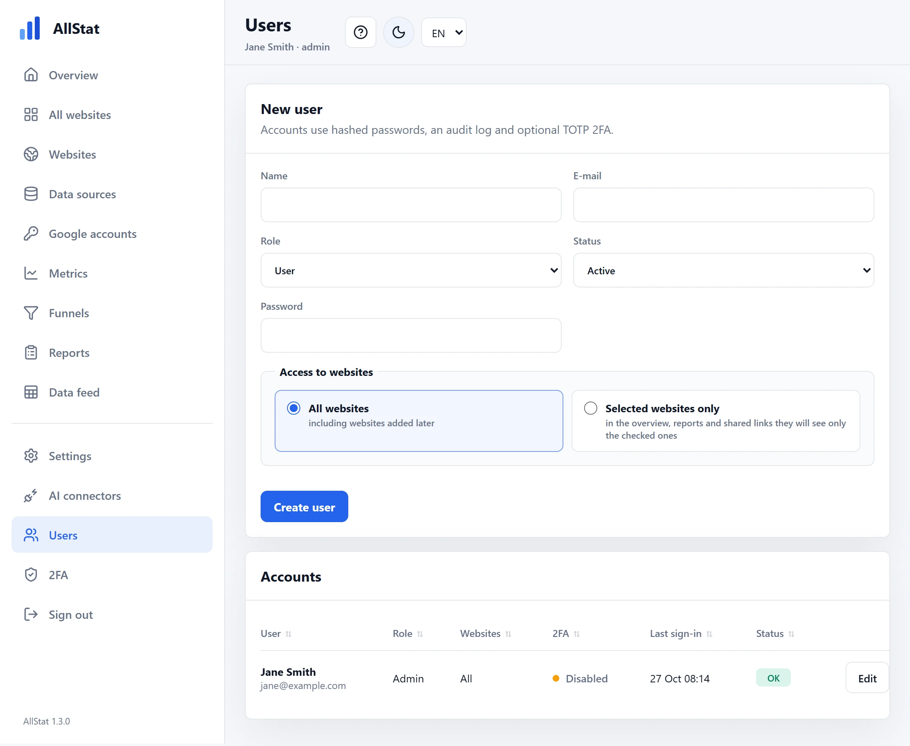
Interface language and theme
AllStat speaks Czech, Slovak and English. Each user switches the language in the user menu in the top right corner (the circle with initials, the “Language” section), and the choice is saved to their account. You set the default language for the sign-in page, the public pages and users without their own choice in “Settings” (“Default language”). During installation, the language chosen in the wizard is taken over. The data for AI (the AI connection, Analyze with AI), the data feed and the exports stay in Czech, because other programs read them. The AI assistant still answers in the language you ask it in.
You switch between the light and the dark theme with the moon button in the top right corner (in the dark theme it shows a sun). The choice applies in that browser, and the charts change colors right away.
Connecting services
Open “Data sources”, click “Add” next to the service you want and fill in the form. Each form contains an expandable section, Detailed step-by-step guide, with the current procedure for that service, including solutions to common errors. The guides in AllStat are updated with new versions, so we do not copy them here in full.

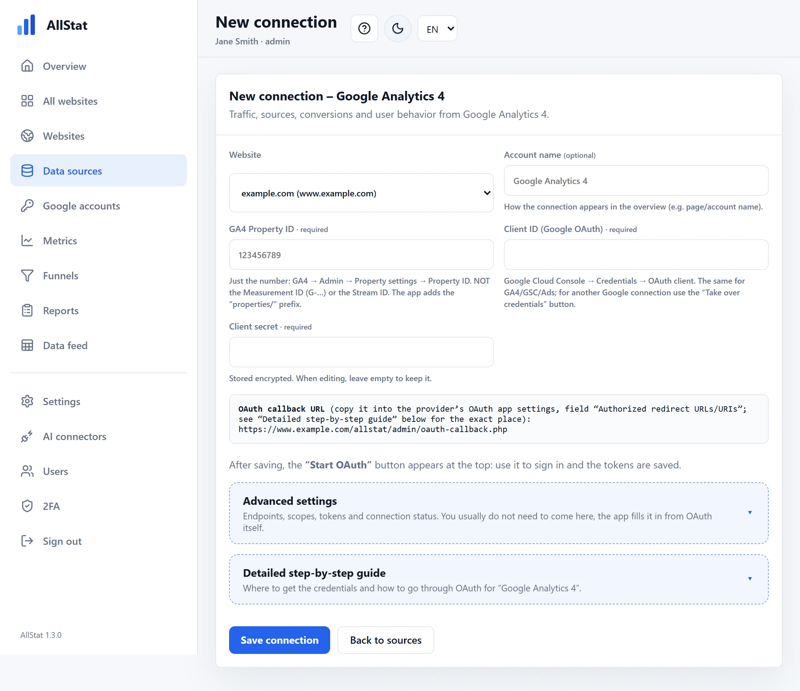
One rule applies to all services with sign-in (Google, Meta, LinkedIn): paste the address from the OAuth callback URL box into the settings of your app at the provider exactly as it is written, including https://. It looks like this:
https://www.your-company.com/allstat/admin/oauth-callback.phpGoogle Analytics 4, Search Console and YouTube
- You create a project in Google Cloud Console, enable the relevant APIs and create an “OAuth client” of the Web application type with the address from the box. You use the same client for all three services, and AllStat offers it for further connections with the “Take over credentials from …” button.
- Publish the app in Google Auth Platform (Audience, “Publish app”). Otherwise it stays in testing mode and sign-ins expire after seven days, so the connection would break every week.
- The first time you sign in, you will see the warning “Google hasn’t verified this app”. This is expected, because you created the app yourself. Click “Advanced” and “Go to (your app name)”. Verification by Google is optional and takes days.
- The account you sign in with must have at least a viewer role on the service (in GA4, “Viewer”).
Facebook, Instagram and Meta Ads
- At developers.facebook.com you create an app of the Business type, add the “Facebook Login for Business” product and paste the address from the box into “Valid OAuth Redirect URIs”.
- You enter the App ID and App Secret in AllStat on the “Connect Meta” page just once. After that, a single sign-in connects Facebook pages, Instagram accounts and ad accounts.
- In “Development” mode, the app works for accounts that have a role in the app (administrator, developer), and no review by Meta is needed. You need the review (App Review) only for other people’s accounts in live use.
- Instagram must be a Business or Creator account and linked to a Facebook page.

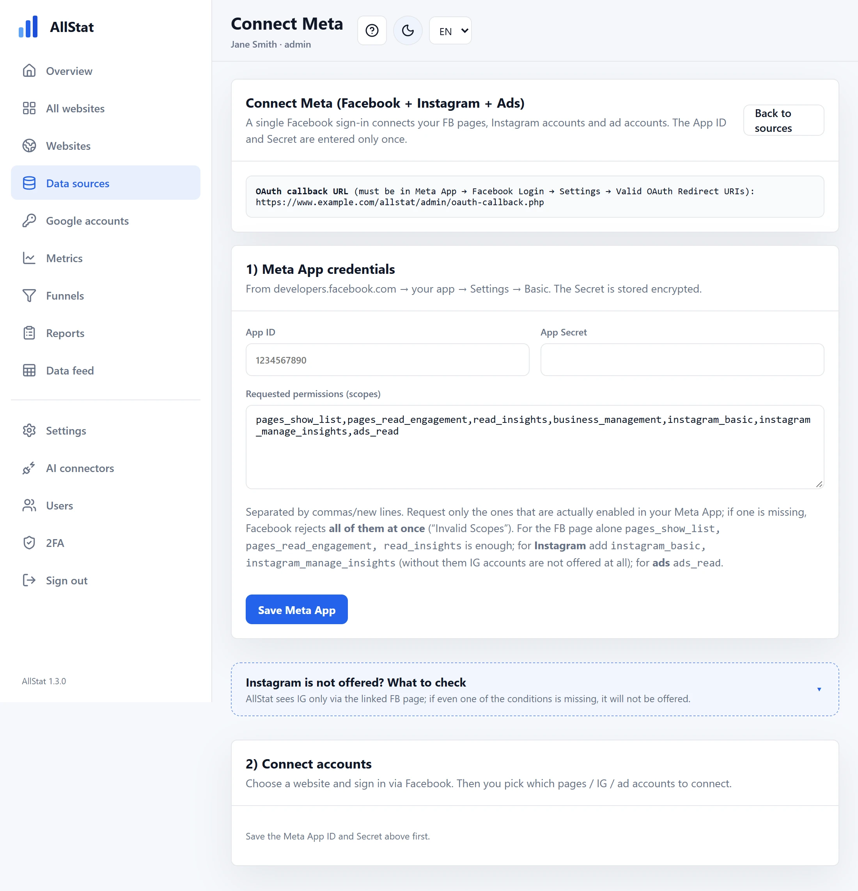
- At linkedin.com/developers you create an app, assign it to your company page and apply for the “Community Management API” product. Without its approval, LinkedIn will not release statistics (error 403), and approval takes days or so.
- A LinkedIn sign-in is valid for 60 days. Once the product is approved, it renews itself, and until then you have to renew it manually.
Google Ads
- You use the same OAuth client as for Google Analytics, you just also enable the “Google Ads API” in Google Cloud Console.
- A developer token is no longer needed, Google abolished it in September 2026. Access is now determined by the project in Google Cloud, and a new project is allowed to use test accounts only. On the Google Ads API, Overview page, click “Upgrade access level” and apply for the Explorer level. Approval usually takes up to 10 business days.
- If you manage the account through a manager (MCC) account, also fill in “MCC / Login customer ID” in AllStat.
Microsoft Ads
- The connection reads the daily performance of the account and its campaigns (impressions, clicks, spend, conversions, conversion value) through the Reporting API. It never writes anything to the account.
- You can sign in with the Google account you use for Microsoft Advertising: all you need is an OAuth client from Google Cloud Console (type Web application, with the callback address that AllStat shows in the form as the Authorized redirect URI). If you sign in with a Microsoft account, set the Microsoft Entra addresses in Advanced settings. Both must use the same tenant:
common,organizations,consumers, or the tenant ID or domain. - You need a Developer Token from the Microsoft Advertising Developer Portal (developers.ads.microsoft.com) and two numbers from the account settings: the Account ID (the ad account number) and the Customer ID (the customer number).
- “Test connection” only checks that Microsoft accepts a report request. The data is loaded by a sync. Microsoft can take several minutes to prepare a report: if it is not ready in time, the sync ends with a message saying so, and the next run picks the report up.
- Amounts are in the ad account’s currency. The report uses the Prague time zone; for an account in another zone, change it in the form.
Microsoft Clarity
- In Clarity you generate an access key (Settings, Data Export) and enter it in AllStat together with the project ID. Clarity allows only 10 requests per day per project.
Google accounts: many websites with one sign-in
If you manage many websites (an agency, many clients), you do not have to fill in the Property ID, Client ID and secret for each website. In the “Google accounts” menu, you connect one or more Google accounts and pick the websites from their Google Analytics 4 and Search Console from a list.
- The Google OAuth client is entered once for the whole installation (the Client ID and Client secret from Google Cloud Console). If you already have GA4 or Search Console connected, just click “Take over Client ID and secret”. In Google Cloud Console, also enable the Google Analytics Admin API, which AllStat uses to find your properties. The redirect URI is the same as for the other Google connections.
- Add an account: type a name (for example the name of a client or agency), click “Add account” and sign in with Google. AllStat asks only for read access to Google Analytics and Search Console.
- Choose websites: AllStat loads the GA4 properties and the websites from Search Console and matches them by domain (a Search Console domain property takes priority). Tick the websites and click “Connect selected”. Missing websites are created automatically, and a property that is already connected is simply switched to this account.
- Download history: after the import, the “Download history for … connections” button downloads the 16-month history for all the new connections one after another. Do not close the page while it downloads.
When a sign-in expires or Google revokes access, the account shows “Disconnected” and you just click “Renew connection”. Keep the app published in Google Auth Platform, otherwise Google cancels sign-ins after seven days. For an individual connection, you can choose when editing whether it signs in with a Google account or with its own Client ID as before. Removing an account stops the connections that use it, and the data in AllStat stays.
History
After connecting, click “Download history” on the source. AllStat pulls in up to 16 months back. The daily cron then fills in the new days.
Funnels: the path from a visit to an inquiry
A funnel shows how many visitors get through the individual steps on your website (for example a visit, starting a calculator, finishing it, a button click, submitting an inquiry) and where most of them drop off. The steps are events from Google Analytics 4. A breakdown by channel, source or campaign shows where the people who reach the end come from.
- In the “Funnels” menu (administrators only), choose a website and a template: Inquiry form, Quick Check, Online shop, or start with a blank funnel.
- For each step, pick an event from the list. AllStat offers the events that actually arrived for the website in the last 90 days, along with their counts. You change the order of the steps by dragging them or with the arrows.
- After saving, you see the step counts right away, from the GA4 history. The breakdown by source starts filling in from the next synchronization. For an older period, run “Download history” on the GA4 source.
- You open a funnel in the overview with the “Switch source” button, in the Funnels group. Users with the User role can see it too (for the websites they have access to), as can the connected AI assistant.
AllStat reads the numbers from GA4, so each step must exist in GA4 as a separate event:
- Write names in lowercase, with underscores and without accents, for example
quick_check_start,quick_check_complete,score_view,cta_click,generate_lead. Always use the same name for the same action. - Send the event from your website through Google Tag Manager: the website writes
dataLayer.push({event: 'quick_check_complete', score: 72});, and in GTM you create a “Custom Event” trigger with the same name and a “GA4 Event” tag with the same event name. Send the score value as a parameter and register it in GA4 under Admin, Custom definitions. - Mark the inquiry as a key event in GA4 (Admin, Events).
- Tag links in campaigns, emails and social networks with UTM parameters (
utm_source,utm_medium,utm_campaign), otherwise they end up as “No campaign” in the breakdown. - The next business step (a qualified inquiry, a meeting, a contract) happens outside the website. To make it visible in the funnel, have your CRM send an event to GA4, for example
lead_qualified, through the Measurement Protocol. AllStat then offers it like any other event.
The steps count events, not people. Someone who starts the calculator twice is counted twice, so a later step can even be more than a hundred percent of the previous one. Without cookie consent, GA4 does not record some of the visits, so the numbers can differ from advertising systems. They are still reliable for comparing periods and sources.
7Connecting AI (Claude and ChatGPT)
AllStat can give the Claude and ChatGPT assistants access to its data. You ask, for example, “Make a monthly report of the website for August” or “Which posts perform best?” and the assistant reads the numbers it needs from AllStat by itself. The connection works through the MCP standard (Model Context Protocol), a common language between AI assistants and applications.
Read only. It sees the aggregated analytics data of all websites in AllStat (traffic, search, social networks, ads, synchronization status), but never the credentials or access keys to the services. An administrator grants access and can revoke it at any time.
Without a connection: the “Analyze with AI” button
You can get an analysis of one website even without the AI connection. On the Overview or in a source detail, click “Analyze with AI” in the top right corner. AllStat prepares a report for the website and period you have selected and offers a “Copy text for AI” button. Paste the text into ChatGPT, Claude or another assistant and ask what you need to know. The report is in Markdown, and in JSON for your own processing. The link to the report is valid for 15 minutes and a regular chat does not open it by itself, so paste the text.
The report flags incomplete days, weeks and months at the end of the period, says how far the data goes, and starts with the context for AI of that website. A regular user can create a report only for the websites they have access to. The report text is in Czech (see above), the assistant still answers in your language.
Context for AI for each website
The AI answers more precisely when it knows who owns the website and what it is for. Under “AI connectors” there is a “Context for AI” card with a list of websites. For each website you see a preview of the text and its status: “Own context”, or “General context” when the field is empty. Click a website to open the field, write a few sentences and click “Save context”. Only that website is saved, and the confirmation appears right next to it. From eight websites on, the card has a search box and a status filter.
Write who you are, who the website serves, what its goal is (sales, sign-ups, awareness) and what resources you have (team size, budget). At most 4,000 characters per website. The text goes to the report from the “Analyze with AI” button and to the assistant in the AI connection for that website.

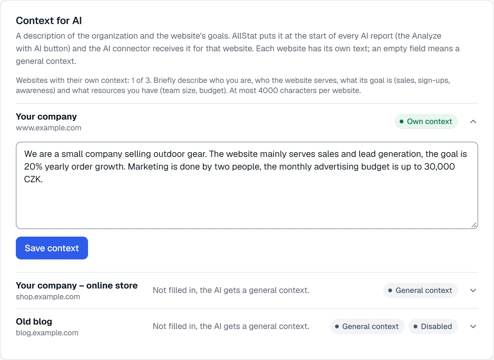
Up to version 1.4, AllStat had one shared organization description in Settings. The update to 1.5.0 copies it to all websites. Go through the list and edit it for websites it does not fit.
Where the AI connection will run
The assistant connects to AllStat through two addresses: the MCP server address, where AllStat answers the assistant (it ends in /mcp), and the AllStat address, where the administrator signs in and grants access. You chose them in step 4 of the wizard, and you can change them at any time in the “AI connectors” menu. Depending on where you put AllStat, you have three options:
| Option | Addresses | What else to do |
|---|---|---|
| A AllStat on a subdomain | AllStat: https://allstat.your-company.comMCP server: https://allstat.your-company.com | nothing |
| B AllStat in a folder of the domain | AllStat: https://www.your-company.com/allstatMCP server: https://www.your-company.com/allstat | add a short block once to the .htaccess file in the domain root |
| C AllStat in a folder of the domain, MCP on its own subdomain | AllStat: https://www.your-company.com/allstatMCP server: https://mcp.your-company.com | create a subdomain whose folder is the AllStat folder |
Options A and C need no changes outside AllStat. Option B is the simplest to prepare, but the Claude and ChatGPT clients look for the sign-in details at the domain root, so the .htaccess file in the domain root needs a short block that hands these addresses over to AllStat. The block changes nothing else on the website.
How it works inside
AllStat includes an allstat-mcp folder, a small entry point for assistants. The rules in AllStat’s .htaccess file redirect the addresses /mcp, /token, /register, /revoke, /authorize, /jwks.json and /.well-known/… to it internally. Until you turn on the AI connection, all of these addresses answer with a 404 error.
Turning it on, step by step
Option B: add the block to the domain root
On the wizard’s final page you got a ready-made block with your path. Add it at the top of the
.htaccessfile in the domain root (usually in thepublic_htmlfolder), above any WordPress rules, and save. It looks like this (the path/allstatis just an example):# BEGIN AllStat MCP <IfModule mod_rewrite.c> RewriteEngine On RewriteRule ^\.well-known/(?:oauth-authorization-server|openid-configuration)/allstat/?$ /allstat/allstat-mcp/index.php [L,E=HTTP_AUTHORIZATION:%{HTTP:Authorization}] RewriteRule ^\.well-known/oauth-protected-resource/allstat(?:/mcp)?/?$ /allstat/allstat-mcp/index.php [L,E=HTTP_AUTHORIZATION:%{HTTP:Authorization}] </IfModule> # END AllStat MCPSkip this step for options A and C. For option C, create a subdomain in your hosting control panel (for example
mcp.your-company.com) and set its folder to the same folder where AllStat is.Turn on the AI connection
In the menu, open “AI connectors”, choose “Yes” for “Allow the AI connection (MCP)” and click “Save settings”. Check that the addresses in the “MCP server address” and “AllStat address” fields are right and start with
https://. Only an administrator with two-factor authentication turned on can then allow an AI connection.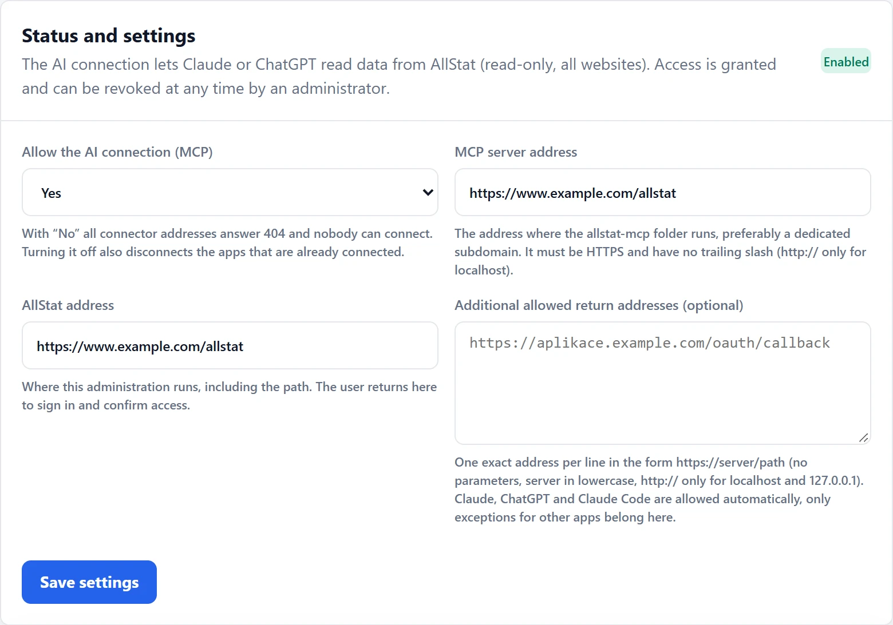
The AI connection turned on, with the addresses from the wizard. Run the check
At the bottom of the page, click “Run check”. AllStat calls its own addresses the way Claude or ChatGPT would, and reports for each one whether it is fine. It sends no real keys. All items should be green. A warning explains what is still left to do, for example the missing block in the domain root for option B.
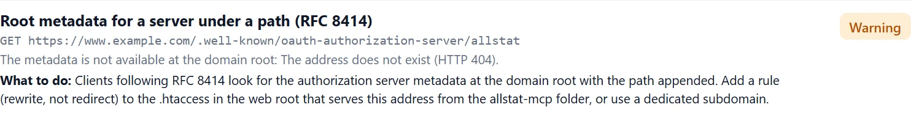
This is how the check warns you that, for option B, the block in the domain root is still missing. After you add it, the warning disappears. Add the connector in Claude or ChatGPT
The “AI connectors” page contains guides with your server’s address filled in. In short:
- Claude (web, desktop, mobile): open Customize, Connectors, Add custom connector. Enter AllStat as the name and the MCP server address with the
/mcpending as the URL. Click Connect, sign in to AllStat as an administrator, enter the code from your authenticator app and click “Allow”. The “Add to Claude” button on the page fills in the details for you. - ChatGPT (web version): in Settings, Security and login, turn on Developer mode, open Plugins, click the plus and fill in the name AllStat, the MCP URL and Authentication OAuth. Then sign in to AllStat as an administrator, enter the code from your authenticator app and click “Allow”.
- Claude Code (command line):
claude mcp add --transport http allstat https://www.your-company.com/allstat/mcpand then, in Claude Code, the/mcpcommand, select allstat and choose Authenticate.
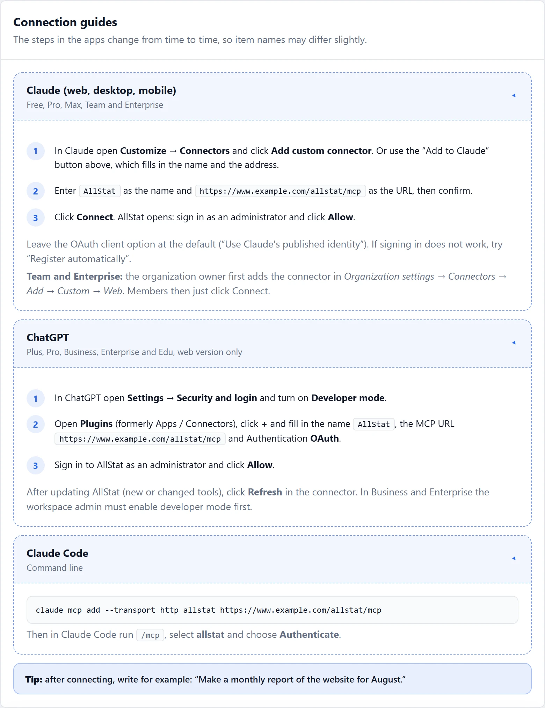
The guides on the AI connectors page. The server address is already filled in. The availability of custom connectors changes with the subscription at each provider. The current overview is in the guides inside AllStat.
- Claude (web, desktop, mobile): open Customize, Connectors, Add custom connector. Enter AllStat as the name and the MCP server address with the
Try it out
Write to the assistant, for example, “Make a monthly report of the website for August.” The assistant calls AllStat and answers from your data.


What the assistant can read
| Tool | What it is for |
|---|---|
list_websites | a list of websites and connected sources, with the status of the last synchronization |
get_report | a ready-made analytics report for a website or a single source over a period |
get_channel_growth | the monthly trend of each channel’s main metric over 3, 6 or 12 months |
get_overview | an overview of a website from Google Analytics 4 and Search Console |
get_source_metrics | metrics of one source: social networks, ads, YouTube, Clarity, Seznam Webmaster |
get_top_content | the best posts and videos over a period |
get_search_queries | queries and pages from Google search |
get_funnel | a website’s funnels: steps, drop-off between them and a breakdown by channel, source or campaign |
get_sync_status | the synchronization status of sources and warnings about stale data |
query_data | a query for anything AllStat stores: a specific page, campaign, query or post, lists of up to 500 rows, trends over time and comparisons with the previous period or year over year |
The assistant calls the tools by itself, you do not need to know them. All of them are read-only.
Who connected and what they do
On the “AI connectors” page you will find the list of connected apps: who granted access and when the assistant last used it. When you disconnect an app, it loses access immediately. The “Recent activity” table shows the last 50 calls (the method, the tool and the parameters, not the content of the responses), and the records are deleted after 90 days. Choosing “No” for “Allow the AI connection (MCP)” disconnects all apps at once.
What the AI connection requires
- HTTPS on both the MCP server address and the AllStat address (without it, assistants refuse the connection).
- Apache or LiteSpeed with rules in the
.htaccessfile allowed (URL rewriting, mod_rewrite). On nginx, your hosting provider must pass the addresses listed above to theallstat-mcp/index.phpfile, and the check in AllStat shows which addresses still do not respond. - The Authorization header must reach PHP. The check verifies this, and with PHP-FPM and FastCGI it sometimes requires a server setting.
- A Claude or ChatGPT subscription that supports custom connectors.
8Updating to a newer version
With one button (since version 1.2.0)
AllStat checks by itself whether a new version has been released at github.com/ffscz/AllStat (during the daily cron, at most twice a day). If it has, an administrator sees a “New version” card in the sidebar. Regular users do not see it.

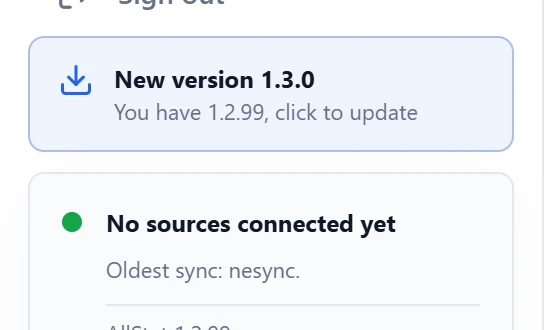
- Click the card (or Settings, Version and updates). The Updates page shows what is new and checks the server.
- Confirm that you have a database backup and click “Update to” the new version. AllStat downloads the package, verifies its signature, backs up the files it will overwrite and replaces them. It takes a few seconds. The database is completed by itself on the next page load.
- Nothing is installed without a valid signature from the author. The
config.phpandconfig-keys.phpfiles stay unchanged. In a modified.htaccess, only the block of AllStat rules is overwritten, see The .htaccess file and your own changes. - If you do not like something after the update, the same page has a “Roll back to” button with the previous version number. It restores the files, and the database stays (the older version works with it).

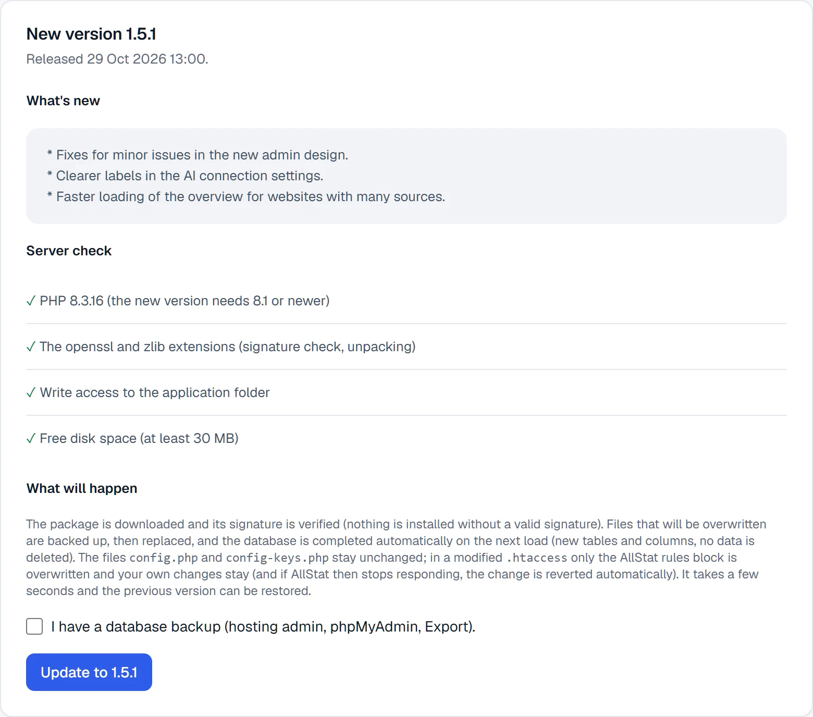
The automatic update needs PHP to be allowed to write to the application folder (this is true on ordinary hosting). If the server does not allow it, the page tells you and you update manually using the procedure below.
The .htaccess file and your own changes
The .htaccess file contains rules for the web server: it protects sensitive files and routes the addresses for the AI connection. Something is often added to it by your hosting (for example when you choose the PHP version) or by the website administrator (blocking robots). That is why AllStat’s rules are enclosed between the lines # BEGIN AllStat and # END AllStat.
- An update overwrites only this block. If it is missing from the file (an older or heavily modified file), the update adds it. Everything outside the block is left unchanged, and you do not have to do anything by hand.
- After a change, AllStat verifies that the website responds. If the server reports an error after the change, or it cannot be verified, AllStat reverts the change immediately, the file stays as it was, and the Updates page shows a “File .htaccess: rules to add” card with the blocks that are missing.
- Write your own rules outside the block. Whatever is between the markers is overwritten by an update.
If the card does appear: over FTP or in a file manager, copy the whole block from # BEGIN AllStat to # END AllStat from the .htaccess.new file into your .htaccess (in place of the older AllStat rules) and keep your own changes. As soon as the rules are in the file, the card disappears by itself. If you do not want to add them (for example because the AI connection runs at a different address), click “Keep my file and delete .htaccess.new”.
When updating from an older version, you may still see a message saying that the .htaccess file has custom changes. AllStat then adds the rules by itself in the same way, at the latest on the next page load.
Manually over FTP (older versions or no write access)
This is how installations of versions 1.0.x and 1.1.0, which do not have the button yet, are updated once. The following versions can then be updated with one button. The update takes about ten minutes and your data stays, because only the application files change.
Save a backup
Export the database (in phpMyAdmin, “Export”) and download
config.phpandconfig-keys.php.Download and unpack the new package
On github.com/ffscz/AllStat/releases, under Assets, download the
allstat-X.Y.Z.zipfile, not “Source code” (it has different folders). After unpacking, you get anallstatfolder, just as with the installation.Upload it over the old one
Upload the
allstatfolder to the same place as before and confirm overwriting all the files. In FileZilla, choose “Overwrite” and “Always use this action”, not “Overwrite if source newer”: the files in the package carry the release date, so the program might skip them. The package does not containconfig.phpandconfig-keys.php, so they stay in place and nothing is overwritten.Open AllStat
The first time you open it, the application completes the database by itself (new tables and columns). Sign in and check the overview.
Uploading the new version brings back the install.php file. It is locked, and when opened it shows the message “AllStat is already installed” and changes nothing. You can delete it. If you added your own rules to the .htaccess file, save them before uploading and put them back after the update.
9Backup and moving
What to back up
- The database. Most hosting providers back up on their own, check it and set up at least a weekly backup. A manual export: phpMyAdmin, “Export”, SQL format.
- The
config.phpandconfig-keys.phpfiles (see chapter 5). You do not need to back up the application files, you have them in the package.
Moving to a different hosting or domain
On the new hosting, prepare PHP and an empty database (chapter 2).
Upload the
allstatfolder from the package (withoutconfig.php).Import the SQL backup into the new database (phpMyAdmin, “Import”).
Upload the original
config-keys.phpfile. Without it, the sign-ins to the services could not be decrypted.Create
config.php: copy the original and change the database details (db) and, if needed, thebase_path(for example/allstat, or/for the domain root).Do not run the wizard. The database already contains users, so the wizard is locked.
If the address changed, fix it in your apps at Google, Meta and LinkedIn (the callback URL), in Settings in the “Public base URL” field, and set up cron again.
10When something goes wrong
You can solve most problems with this list. If you cannot work it out, contact whoever gave you the package and send them: the error text or a screenshot, the PHP and database versions (they are in the server check) and the last twenty lines of the error_log file (see below).
“Internal Server Error” or a white page appears when opening the address
There are three common causes. 1) The server uses a PHP older than 8.1: open …/allstat/install.php directly, which reports the version clearly, and switch PHP as described in chapter 2. 2) Your hosting does not allow some of the rules in the .htaccess file: rename it to .htaccess.off and reload the page, and if that helps, ask your provider to allow the “Options” and “Require” directives. 3) The upload was not complete: upload the files again.
The server check reports missing or damaged files
The wizard compares the uploaded files with an exact list from the package and shows which ones are missing or have a different size. Upload them again, in the “Auto” or “Binary” transfer mode. The installation is blocked until this is fixed, so that a damaged application cannot be created.

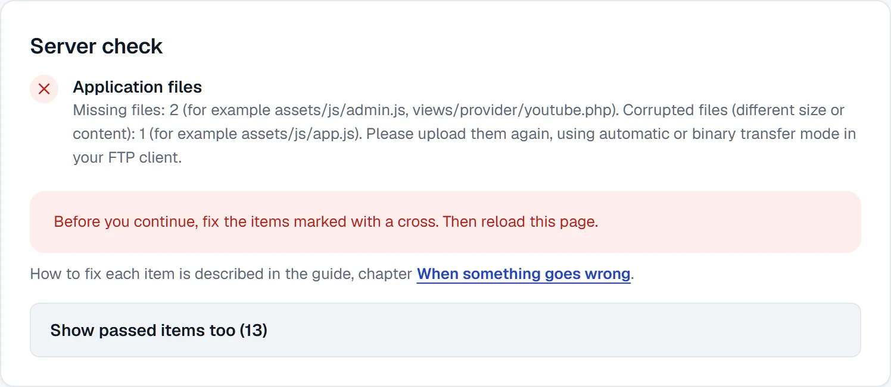
The server check reports another red item
Each item has an explanation. The most common ones are: PHP version (switch it as described in chapter 2), PHP extension (turn it on in the PHP settings of your hosting or ask your provider), AES-256-GCM cipher (an outdated OpenSSL, ask your provider for a newer PHP). An orange exclamation mark is only a warning and does not stop the installation.
The wizard reports that the website runs without HTTPS
First turn on the certificate (chapter 2). Without HTTPS, passwords would travel over the network unencrypted, and services such as Google and Meta refuse the sign-in.
After signing in, the page returns to the sign-in
The browser or the server is discarding the session. Check: 1) that you always open AllStat at the same address (with or without “www”, over https://), 2) that your browser allows cookies, 3) that session storage works on the server (the wizard tested this in the server check, the “Sign-in (sessions)” item). If that does not help either, ask your provider to check the folder for PHP sessions.
The application signs me out after two hours of inactivity
This is intentional. You change the time in the config.php file, in the idle_timeout item (in seconds, the default is 7200).
I lost the phone with my 2FA app
On the code page, click “No phone? Use a backup code” and enter one of your backup codes. After signing in, open Two-factor authentication, reset 2FA with your password and another backup code, and set it up again with your new phone. If you have no backup codes, another administrator can reset your 2FA in the “Users” menu, or follow the last sentence of the next guide.
I forgot the administrator password
If you have a second administrator, they can change the password in the “Users” menu. Otherwise:
- On your computer, create a
hash.phpfile with one line:<?php echo password_hash('YourNewPassword123', PASSWORD_DEFAULT);(replace the password with your own, at least 12 characters). - Upload it to the
allstatfolder, open it in a browser and copy the text it prints (it starts with$2y$). Delete the file right away. - In phpMyAdmin, open the
allstat_userstable and, on your row, paste the copied text into thepassword_hashcolumn. If you have 2FA turned on and cannot access it, also clear the contents of thetotp_secret_enccolumn (set it to NULL).
I lost the config-keys.php file
Without it, the stored sign-ins to services cannot be decrypted. The application shows an administrator a warning that it is using the default key. Create the config-keys.php file again with a new long random string (at least 32 characters, generate it with a password manager) and create all the connections in “Data sources” again.
<?php
return ['keys' => [
'PUT_A_LONG_RANDOM_STRING_HERE',
]];Cron is not running
Open Settings. The status “Has not run yet” or “Has not run for over 26 h” means the job has not arrived. Try the address with the secret key in a browser: a response starting with {"ok":true means AllStat is fine and the problem is in the job’s setup at your hosting. The response “Neplatný cron secret” (Czech for “Invalid cron secret”) means the key in the job does not match (it may have been changed with the “Generate a new cron secret” button). If your hosting does not know the curl command, try wget, PHP from the command line or an external service (chapter 5).
Google: “redirect_uri_mismatch”
The address in the app at Google differs from the one AllStat sends. It must match character for character: https, with or without “www”, the whole path /admin/oauth-callback.php. Copy it from the “OAuth callback URL” box in the connection form.
Google: “Access blocked” or the connection stops renewing after a week
The app is in testing mode. In Google Auth Platform, open “Audience” and click “Publish app” (chapter 6). Then start the connection again.
Facebook and Instagram: the connection does not work or Instagram is missing from the list
Check that you are signed in with an account that has a role in the Meta app, that Instagram is a Business or Creator account and linked to a Facebook page, and that the permissions requested include only what the app is actually allowed to use. On the “Connect Meta” page, there is an expandable box, “Instagram is not offered? What to check”, with the procedure.
LinkedIn: error 403 on statistics
LinkedIn has not approved the “Community Management API” product yet, or you are not an administrator of the company page. The sign-in goes through, but the statistics are downloaded only after approval. Wait and test the connection again.
AI connection: the check reports a warning about “RFC 8414” or missing metadata at the domain root
AllStat is in a folder of the domain (option B in chapter 7) and the block is missing from the .htaccess file in the domain root. Add it as described in chapter 7, or point AllStat to its own subdomain that points to the same folder.
AI connection: the check reports HTTP 403 for Claude or ChatGPT clients
The requests were caught by a firewall, a WAF (for example Cloudflare or ModSecurity) or a bot filter in the .htaccess file. Ask your provider to make an exception for AllStat’s addresses /mcp, /token, /register and /.well-known/.
AI connection: the Authorization header does not reach PHP
On Apache and LiteSpeed, a rule in the .htaccess file that comes with the package passes it on. Check that it was uploaded in full and that your hosting allows rules in .htaccess. With PHP-FPM and FastCGI, sometimes only a server setting helps, so ask your provider to pass the Authorization header to PHP.
AI connection: the connector addresses answer 404 even after turning it on
Either “Allow the AI connection (MCP)” is still set to “No”, or the rules in the .htaccess file are not being applied (nginx, limited rights to .htaccess). Check the setting, run the check and, if needed, ask your provider to allow URL rewriting.
The page looks broken, images or styles are missing
The files were uploaded incompletely or in text mode. Upload them again in the “Auto” or “Binary” mode and refresh the page in your browser with Ctrl and F5.
Where do I find the error log
In cPanel in the “Errors” or “Metrics, Errors” section, or in the error_log files that PHP writes into the application folders (allstat, allstat/admin). Do not share error_log files publicly, they contain paths to your server.
The website runs on nginx and not on Apache
The .htaccess file is not used in nginx, so you have to forbid direct downloads of sensitive files in the server configuration (your provider usually does this on request). Give them this as a template:
location ~* \.(sql|md|log|bak)$ { deny all; }
location ~ ^/allstat/(config|config-keys)\.php$ { deny all; }
location ~ ^/allstat/(lib|views|docs)/ { deny all; }11Security: a short list
- AllStat runs exclusively over HTTPS.
- Each user has their own account and a strong password, at least 12 characters.
- Administrators have two-factor authentication turned on, or it is required for everyone.
- The
config.phpandconfig-keys.phpfiles are backed up outside the website and not shared anywhere. - The cron address with the secret key is not sent to anyone. If you suspect a leak, generate it again in Settings and fix the job at your hosting.
- The
install.phpandinstall-token.phpfiles are not on the server (they delete themselves, otherwise remove them by hand). - Only those who need access to the services have it. Turn off unused users in the “Users” menu.
- The AI connection is turned on only if you use it. Now and then, check the list of connected apps and the recent activity in the “AI connectors” menu.
- You install a new version of AllStat as soon as you get it (chapter 8).
12Uninstalling
Cancel the cron job in your hosting control panel.
In the “AI connectors” menu, turn off the AI connection, and remove the AllStat connector in Claude or ChatGPT.
Delete the
allstatfolder from your hosting. If you added a block to the.htaccessfile in the domain root for the AI connection, delete it too (the whole lines from “# BEGIN AllStat MCP” to “# END AllStat MCP”).Delete the database and its user (cPanel: “MySQL® Databases”).
Remove AllStat’s access at the providers: in your Google account’s security settings (the section on third-party apps), in the Facebook and Instagram settings (apps and websites) and in the LinkedIn settings. You can delete the apps you created there for AllStat.
13Technical details and files
| Item | Value |
|---|---|
| Package version | 1.5.0 |
| License | GNU GPL version 3 (the LICENSE file), source code and updates at github.com/ffscz/AllStat |
| Application language | Czech, Slovak and English |
| Server requirements | PHP 8.1 or newer (8.3 recommended), MySQL 5.7.8 or newer or MariaDB 10.3 or newer, Apache or LiteSpeed (nginx with custom rules, see chapter 10) |
| Database | 40 tables, InnoDB, utf8mb4 encoding, utf8mb4_czech_ci collation |
| Browsers | modern browsers (Chrome, Edge, Firefox, Safari), tested in Chrome |
| Data storage | everything in your database. AllStat does not send your data to the author or to third parties, it only calls the services you connect yourself |
| Encryption | sign-ins to services are stored encrypted (AES-256-GCM) with the key from the config-keys.php file, and user passwords as a secure hash |
Overview of folders and files
| Folder or file | What it is for |
|---|---|
index.php, admin/, api/, views/ | the application: overviews, administration, the interface for charts |
lib/ | the application’s program logic, not accessible from outside |
assets/ | styles, scripts, libraries and images |
cron/ | the script for the daily data download |
allstat-mcp/ | the entry point of the AI connection (MCP), the rules in .htaccess pass the addresses /mcp, /token and /.well-known/… to it |
oauth/ | the sign-in and consent page for the AI connection |
privacy.php, terms.php, data-deletion.php | public legal pages |
schema.sql | the database structure for the installation |
.htaccess | protection of sensitive files and security headers |
install.php | the installation wizard, deletes itself after the installation |
install-token.php | the installation code, exists only during the installation and then deletes itself |
lang/ | translations of the interface into Slovak and English |
config.php, config-keys.php | created by the wizard: the database access and the encryption key |
docs/, README.txt | this guide and a short manual, you can delete them from the server after the installation |